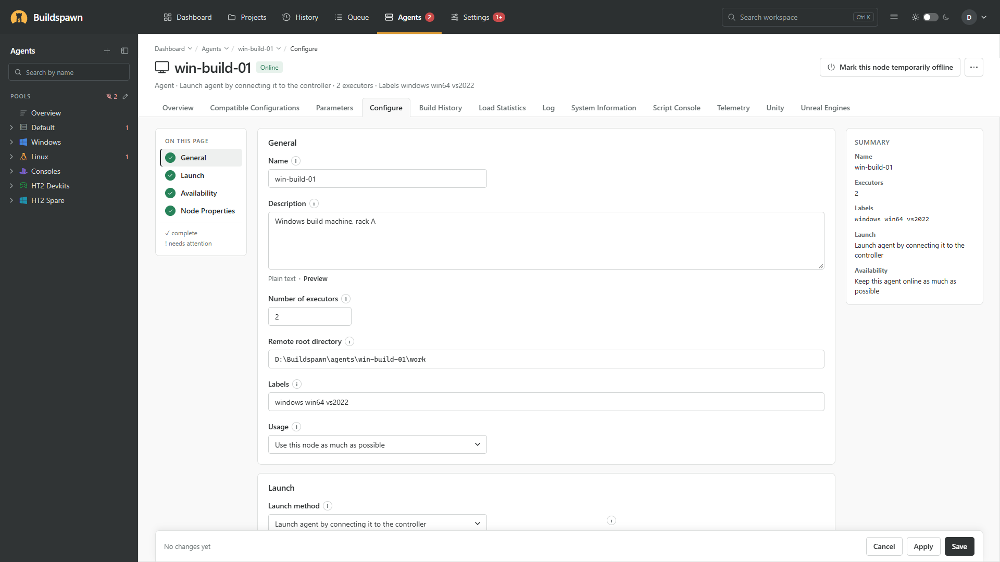

Agent settings
The Configure page of an agent holds everything that you can set for one machine: its name, how many builds it runs, its labels, how it connects, when it is online and a list of extra properties.
When to use it
Use it when you add an agent with New Node, and later when you want to change its labels, its work folder, its number of builds, its schedule, or tell Buildspawn where a tool lives on that machine.
How to set it up
- Open Agents and click the agent's name. (To create one, click New Node, type a name, choose Permanent Agent and click Create; the same form opens.)
- Open the agent's Configure page. From the Agents list you can also use the row menu entry Settings of an opened row.
- Fill in the fields described below.
- Click Save. Apply saves and stays on the page.
The page has a summary card at the top (name, executors, labels, launch method and availability) and four sections: General, Launch, Availability and Node Properties. You need the Configure permission on the agent.

Every field
General
| Field | What it does | Default | Example |
|---|---|---|---|
| Name | The name that identifies the agent on this server. It need not match the host name. These characters are not allowed: ? * / \ % ! @ # $ ^ & | < > [ ] : ; | What you typed in New Node | win-build-04 |
| Description | Free text. Plain text with a preview. | empty | Rack 3, RTX 4080, Unreal 5.4 builds |
| Number of executors | How many builds may run on this agent at the same time. At least 1. See Builds at a time. | 1 | 2 |
| Remote root directory | A folder on the agent machine that Buildspawn uses for workspaces and tools. Use a full path. It must be local to the agent. If you use a relative path, it starts from the folder where the agent runs. Keep it where a reboot does not delete it, so that workspaces and tools stay cached. | empty | D:\buildspawn-agent\work |
| Labels | Words, separated by spaces, that tag the agent. Build configurations pick agents by label. Avoid ! & | < > ( ) in a label, because label expressions use them. See Labels and agent requirements. | empty | windows unreal-5.4 gpu |
| Usage | Use this node as much as possible: any build that the pool and labels allow may run here. Only run build configurations with label expressions matching this node: reserves the agent for build configurations that ask for one of its labels. | Use this node as much as possible | Reserved, for a devkit host |
Launch
| Field | What it does |
|---|---|
| Launch method | How the agent starts and connects. Two choices, described next. |
Launch agent by connecting it to the controller
The inbound agent. The agent machine opens the connection to the server. The server does not need to reach the agent, so it works behind a firewall or home router. This is what the downloads and the New Node zip use. The agent page shows Connect the agent with the commands, the download for this node and the secret. See Connect an agent.
The launcher has no field of its own in the current version. Give the options to the agent itself (for example webSocket=false in its settings file). If an old agent still has launcher properties, a note says setting them is deprecated.
Launch agent via execution of command on the controller
The server runs a command that starts the agent on the other machine, for example over SSH. The command's input and output carry the connection.
| Field | What it does | Example |
|---|---|---|
| Launch command | The command that the server runs on itself. It must start java -jar agent.jar on the target machine and keep its standard input and output connected. | ssh build@mac-mini-02 java -jar /Users/build/agent.jar |
Use the inbound agent when you can. The command launcher needs the server to reach the machine, and the command runs with the server's rights.
Availability
Controls when Buildspawn starts and stops this agent. The field Availability offers three choices.
| Choice | What it does | Fields |
|---|---|---|
| Keep this agent online as much as possible | The agent stays online. If it drops (a network fault, for example), Buildspawn tries to start it again from time to time. | none |
| Bring this agent online according to a schedule | The agent comes online at set times and stays online for a set time. If it goes offline during its scheduled time, Buildspawn tries to restart it. When the time is over, it goes offline. | Startup Schedule: when to start, in the same format as the schedule of a trigger, for example H 20 * * 1-5. Scheduled Uptime: minutes to stay up. If longer than the gap between starts, the agent stays online all the time. Keep online while builds are running: ticked by default; when the uptime ends, wait for the running builds to finish. |
| Bring this agent online when in demand, and take offline when idle | The agent comes online when builds that it can run have waited in the queue for the In demand delay. It goes offline when it has run nothing for the Idle delay. | In demand delay: minutes a build must wait (0 or more). Idle delay: minutes idle before it goes offline (1 or more). |
The schedule and demand choices only work when the server can start the agent itself, which means the command launcher. An inbound agent connects on its own, so use Keep this agent online as much as possible for it. If you want an inbound agent to rest at night, use a service schedule on the machine or Mark offline.
Node Properties
Each property is a block you can tick or fill in. Some come from plug-ins that are included in Buildspawn. The next table is every property you can see on the page.
| Property | What it does |
|---|---|
| Disk Space Monitoring Thresholds | Mark the agent offline, or warn, when free space gets low. |
| Environment variables | Variables set for every build on this agent. |
| Tool Locations | Where a configured tool is installed on this agent. |
| Custom parameters | Your own name=value facts that requirements can check. |
| Collect telemetry from this agent | A box, ticked by default. Untick it to stop CPU, memory, disk and GPU samples from this agent. (The property is called Don't collect telemetry from this agent: unticking the box adds it.) |
| BuildPatch Tool folder | Where the Epic BuildPatch Tool lives on this agent. |
| Enable node-based security | Who may do what with this one agent. |
| Publish Over CIFS | A WINS server for this agent's file-share uploads. |
Disk Space Monitoring Thresholds
Four optional fields. A size such as 1.5GB or 100KiB. Empty means use the global value (set in Settings, under the node monitors). 0 turns that check off for this agent.
| Field | What it does | Example |
|---|---|---|
| Free Disk Space Threshold | If the agent has less free space than this, it is marked temporarily offline. | 20GB |
| Free Disk Space Warning Threshold | Below this, a warning shows on the agent's page. It stays online. | 50GB |
| Free Temp Space Threshold | Same as the first, for the temp folder. | 2GB |
| Free Temp Space Warning Threshold | Same as the second, for the temp folder. | 5GB |
A game studio's agents often hold huge workspaces. Set a bigger threshold than the default so that the agent goes offline before a build runs out of space.
Environment variables
List of variables: click Add for each. Each row has a Name and a Value. Every build on this agent gets them as environment variables. Example: UE_ROOT = D:\UE\UE_5.4. They are visible to anyone who can read the agent, so never put a secret here.
Tool Locations
List of tool locations: for each row, choose a Name from the list of tools configured in Settings (shown as (type) name), then give its Home on this machine. The build then uses that path on this agent and skips installing the tool. Example: tool (Git) Default, home C:\Program Files\Git.
Custom parameters
Parameters: one name=value per line, such as rack=a3. Build configuration requirements can check them. They are listed on the agent's Parameters page. See Labels and agent requirements.
| Rule | Detail |
|---|---|
| Name | Letters, digits, dots, dashes and underscores. It starts with a letter or digit. |
| Reserved | Names that start with agent. are the ones the agent reports itself. You cannot use them. |
| Secrets | A name that looks like a secret is refused, because anyone who can see the agent can read the parameters. |
| Size | At most 100 parameters, and a value of at most 1000 characters. |
Errors read, for example, Expected name=value: …, … names starting with agent. are the ones agents report or An agent has at most 100 custom parameters.
Collect telemetry from this agent
The box is ticked by default. Untick it so that this agent sends no CPU, memory, disk, network or GPU data. Its Telemetry tab and the live columns of the Agents list then read Off. The agent is also listed under Agents that don't send telemetry on the Configure monitors page. See Telemetry. Default: ticked, so telemetry is collected.
BuildPatch Tool folder
Folder: where this agent keeps the Epic BuildPatch Tool, for example on a fast disk. The Epic steps look for the program here, and the Install BuildPatch Tool step installs here unless the step names another folder. Empty: tools/buildpatchtool in the agent folder. Example: E:\tools\bpt.
Enable node-based security
Gives this one agent its own permission table. The table has two groups of options:
- Inheritance Strategy: Inherit globally defined permissions (the default) or Do not inherit permission grants from other ACLs.
- A matrix of users and groups with the agent permissions Build, Configure, Connect, Delete and Disconnect, a filter, and Add user and Add group.
If your server signs people in with Microsoft Entra ID, there is a second block called Entra ID Authorization Matrix with the same table and an extra Add from Entra ID button. The two blocks are alternatives. See Authorization and Roles for the global tables.
Publish Over CIFS
WINS server: the IP address of a WINS server that this agent should use to find shared folders. Leave it empty to turn WINS off. Default values for the server and for agents come from the global settings of the Publish Over CIFS plug-in.
Properties that are not on the form
One more node property exists but has no fields: the owner of a personal machine. It is set when a user adds a machine from My machines and is not shown on the Configure page. See Personal agents.
A worked example
You add a console devkit host for the studio's PlayStation builds.
- Click New Node, name it
ps5-devkit-02, choose Permanent Agent. - Set Number of executors to
1, because a devkit runs one build at a time. - Set Remote root directory to
D:\buildspawn-agent\work. - Set Labels to
ps5 devkitand Usage to Only run build configurations with label expressions matching this node, so that ordinary builds never use it. - Leave Launch method on the inbound agent and Availability on Keep this agent online as much as possible.
- Under Custom parameters, add
rack=b2andsdk=9.00. A build configuration can then requiresdkto be version no less than9.00. - Under Disk Space Monitoring Thresholds, set Free Disk Space Threshold to
40GB. - Click Save, then download the zip for this node and install it (see Install an agent).
What you see when it runs
- The agent page says Waiting for the agent to connect until the machine connects, then shows it online with its labels and executors.
- On the Agents list the row shows the pool, status and live values.
- When the disk threshold is passed the agent shows Offline with a reason such as Disk space is below threshold of 20 GiB, and comes back by itself when space is freed.
Problems and fixes
| Problem | What to do |
|---|---|
| The name is refused. | It holds a forbidden character, or another agent has the name. |
| Builds never run on the agent. | Check its pool (see Pools), its labels, and that Usage is not reserving it. |
| All builds fail at once with a path error. | Remote root directory is not a full path the service account can write to. |
| The agent went offline with a disk-space reason. | Free space or lower the threshold. It returns on its own. |
| A custom parameter is rejected. | Read the message under the field: a bad name, a reserved agent. name, a secret-like name or too long. |
| The schedule choice does not start the agent. | The server can start only agents that use the command launcher. Inbound agents start from their own machine. |